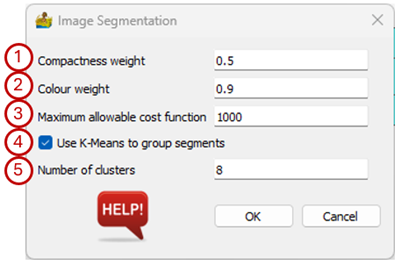

Image Segmentation¶
This tool performs image segmentation, following the technique by Baatz and Schäpe (2000).
It has the following parameters:
Compactness weight – The weight assigned to compactness. Compactness indicates the degree of clustering in an area (Zhong et al., 2005).
Colour weight – The weight assigned to colour heterogeneity. The colour heterogeneity includes all channels of a multiband image (Zhong et al., 2005).
Maximum allowable cost function – Only regions where the merge criterion is lower than this number will be combined into a segment. The merge criterion is given by (Zhong et al., 2005):
where:
\(w_{col}\) – weight assigned to colour heterogeneity.
\(h_{col}\) – colour heterogeneity.
\(w_{com}\) – weight assigned to circle-like compactness homogeneity.
\(h_{com}\) – circle-like degree of homogeneity.
\(h_{sth}\) - rectangle-like degree of homogeneity.
Use K-Means to group segments – Segments can be group by means of a K-means classifier.
Number of clusters – The number of clusters the K-means classifier must produce if that option was selected.

References¶
Baatz, M, Schäpe, A., 2000. Multiresolution segmentation: An optimization approach for high quality multi-scale image segmentation. Proceedings of Angewandte Geographische Informationsverarbeitung XII, 12-23